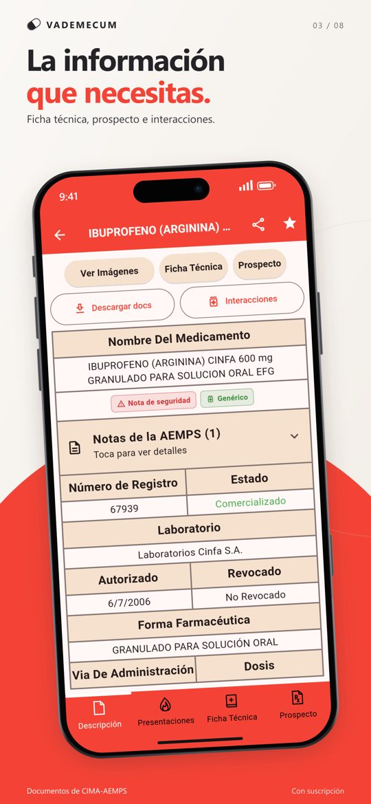
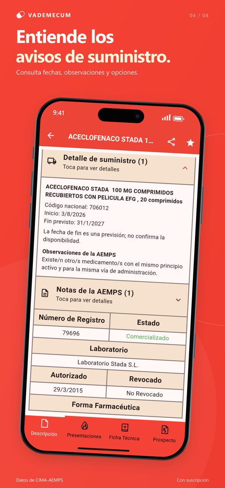
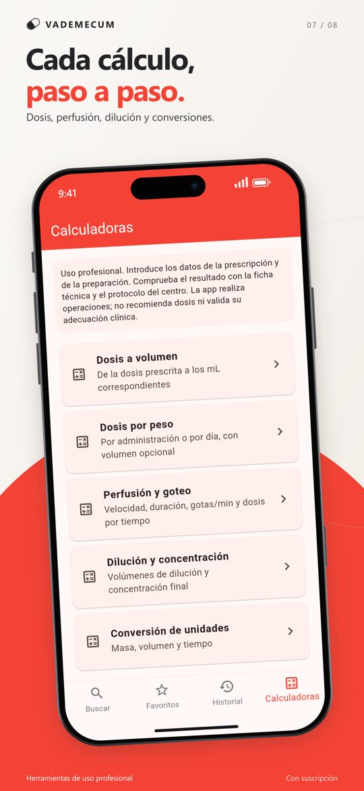

Para farmacia, enfermería, medicina y estudiantes
Vademécum de medicamentos de España: ficha técnica, prospecto e interacciones
Los medicamentos autorizados en España con los datos de CIMA-AEMPS actualizados cada día. Por apartados, sin conexión y sin registro.
Descargar en el App StoreDescargar en Google Play
Prueba gratuita de 7 días. Después, 3,99 €/mes o 34,99 €/año; se cancela desde la tienda.
Lo que te pasa hoy, y lo que cambia
La web oficial no carga en el móvil, o la ficha técnica es un PDF largo que hay que recorrer entero.
Ficha técnica y prospecto por apartados, adaptados a la pantalla, y guardados para leerlos sin conexión.
Buscar las interacciones obliga a bajar hasta el apartado 4.5.
Las interacciones, a un toque desde la ficha.
Un medicamento está desabastecido y hay que buscar qué dar en su lugar.
El aviso de suministro en la propia ficha, con alternativas del mismo principio activo que no tienen aviso.
Otras apps piden registro o el número de colegiado.
Abres y buscas. Sin cuenta y sin publicidad.



Qué incluye
- Búsqueda por nombre comercial, principio activo, laboratorio o grupo ATC
- Prospecto y ficha técnica de CIMA por apartados, con el PDF oficial
- Interacciones, posología, contraindicaciones, embarazo y lactancia a un toque
- Presentaciones y código nacional; equivalentes con el mismo principio activo, dosis y forma
- Avisos de suministro y notas de seguridad de la AEMPS, con alternativas sin aviso
- Calculadoras de dosis por peso, dosis a volumen, perfusión y goteo, dilución y conversión de unidades
- Documentos guardados sin conexión, favoritos, notas e historial, solo en tu móvil
Descargar en el App StoreDescargar en Google Play
Preguntas frecuentes
¿De dónde salen los datos?
De CIMA, el centro de información de medicamentos de la Agencia Española de Medicamentos y Productos Sanitarios (AEMPS), actualizados cada día. Vademecum es una app independiente: no está afiliada a la AEMPS ni la representa.
¿Funciona sin conexión?
Sí. El prospecto y la ficha técnica de los medicamentos que guardes, las notas y las calculadoras funcionan sin internet.
¿Hace falta registrarse o el número de colegiado?
No. No hay cuenta ni se piden datos, y la app no tiene publicidad.
¿Cuánto cuesta?
La descarga es gratuita y el acceso completo es por suscripción: 3,99 € al mes o 34,99 € al año, con una prueba gratuita de 7 días la primera vez. Se cancela desde la tienda.
¿Sirve fuera de España?
El catálogo es el de la AEMPS: fuera de España los nombres comerciales y las presentaciones pueden no coincidir con los de tu país.
¿Sustituye a la ficha técnica oficial?
No. Es una herramienta de consulta para profesionales y no sustituye el criterio clínico ni la información oficial actualizada.
Quién la hace
Vademecum es un proyecto independiente de Impulsit Solutions, hecho en España y en la App Store desde 2017. No está afiliado a la AEMPS: usa los datos públicos de CIMA (cima.aemps.es). De la misma familia: Vademecum Veterinario, para medicamentos veterinarios. Contacto: pau.sevilla@icloud.com.